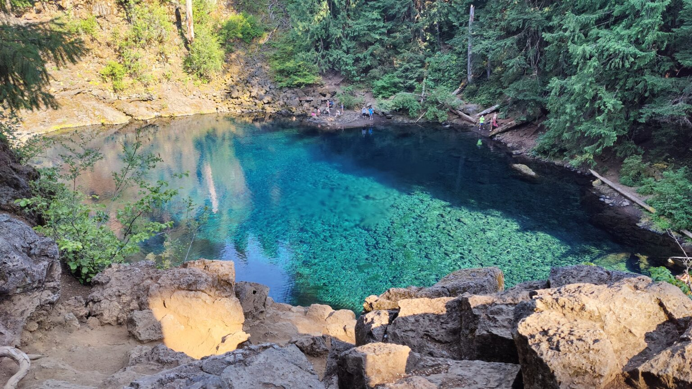

Destination directory
The great PNW.
Check out our travels. This directory is organized by states in the great Pacific Northwest. New destinations are added as we scout them.

Check out our travels. This directory is organized by states in the great Pacific Northwest. New destinations are added as we scout them.